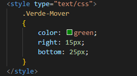

Regresar
4.6 Escriba una regla de CSS que cambie el color de todos los elementos que contengas el atributo class = "Verde- Mover" a verde y los desplace 25 px hacia abajo y 15 px a la derecha
Este texto esta modificadocon la siguiente regla:

 Regresar
Regresar